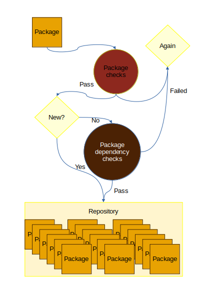
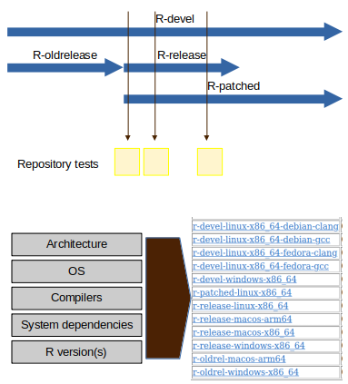

Packaging R: getting in repositories
After the previous post collecting information about repositories I want to collect here my thoughts on adding a package in a repository and how repositories are recognized. As in the previous post this is built on the assumption that one already has a package or more and wants to distribute it.
This is meant as a reflection of what is an R repository and not intended for R package developers. However, their feedback is appreciated to consider how an ideal repository would be.
Package submission
An R repository will have a way to incorporate a package. CRAN submission process starts with a form, while Bioconductor is done through a Github issue.
The process will usually then start with an automated process. Until the automated process check hasn’t passed probably no one will look into the package submission. This reduce the hours a human must dedicate to manage submissions. If a man is kept in the loop one could appeal the automatic process contacting them, or if it is a random failing re-submitting the package again.

Generally a package must first pass a package quality check before it is considered for further integration test. This integration test is usually checking the new version of a package with packages that depend on it, also known as reverse dependencies.
Package maintenance
Once a package is included in a repository it usually needs to be maintained.
There are many moving pieces, chips architecture, OS, R, other packages. This all lead that authors need to maintain the packages in good shape if they want it to remain useful to users. Of course, if one doesn’t want to do that they do not need to create a repository to share their package.

This leads that at any given time point there must be some tests for any given package under different conditions as shown in image 2. This leads to the possibility of having a package archived from the repository for failing the checks in place.
Repositories provide these checks as a service to the users. They guarantee that R packages in the repository work well together and pass the same set of packages (mostly). This is what leads to their reputation and usage among users (this is true beyond R, DEBIAN, Ubuntu, …).
Closing remarks
There are several official repositories how the package submission works when a package is submitted to one but it is related, via dependencies to other repositories is a matter of another post.
There are some discussion on what is an R repository. The importance of CRAN and Bioconductor has lead to some confusion. There are generally two meanings of what a cran-like repository is:
One where
install.packages()works (This is defined by how the files and binaries are organized and will be a theme for another time).One were all the checks described here are in place and
install.packages()works too.
r-universe is using the first definition but could be used to generate repositories with checks that comply with the second definition. Other repositories that use that are the Posit Public Package Manager, or the R4Pi repository (which provides binaries for Raspberry Pi OS).
As the second definition is more strict I’ll focus on it as this post has explained.
PS: This post might be edited as it has been siting in my computer for several months. I prefer to post it and be improved with feedback, so let me know if you have any addition.